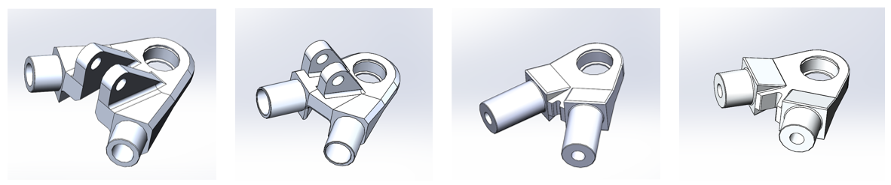

Overview
The UVic Formula Racing EV originally used welded 4130 steel a-arms in its double-wishbone pull rod suspension: simple and strong, but heavy at over 1.5 kg. This project replaced them with machined aluminum nodes bonded to carbon-fibre tubes, cutting 1,058 g while holding the suspension's kinematics and a minimum 1.2 safety factor. Because the a-arms are unsprung corner mass, that saving lowers unsprung mass and the car's yaw moment of inertia, which directly sharpens handling.
I started from the existing suspension geometry and did hand calculations, then used load simulations and FEA to model the on-track forces through each node. From there I ran topology optimization to strip away material wherever the structure allowed, selecting aluminum grades to match the strength each node needed while keeping every part CNC-machinable. The sections below walk through the calculations, simulations, and final design in detail.

Load Simulation
- Used a vehicle model in Dynatune from the car's mass, CG height, track, and wheelbase to predict the loads reaching each suspension corner.
- Computed link loads for 12 combined load cases, including static, vertical bump, acceleration/regeneration, braking, cornering, and all relevant combinations using the Dynatune vehicle load case analysis tool.
- Extracted the tension and compression forces carried by each A-arm member in every case, since the members act as two-force members in the suspension.
- Took the worst-case (governing) load for each of the four nodes forward as the input to the hand calculations and FEAs.
Hand Calculations
- Sized the adhesive bond length between each node and its carbon tube from a tear-out (adhesive shear) calculation at a safety factor of 4, reflecting the larger uncertainty in bond strength.
- Sized the carbon-fibre tube diameter from a maximum-axial-stress calculation at a safety factor of 2.5.
- Verified that the selected tube geometry would not buckle under the worst-case compression.
- Used these results to set the baseline node geometry before any material was removed.
FEA & Mesh Convergence
- Modelled all four nodes based on suspension geometry and other constraints (swivel-joint, c-clip) in SolidWorks and ran a mesh-convergence study to select a mesh size that gave stable stress results.
- Applied one consistent mesh across every node so results stayed comparable between iterations and between different node designs.
- Loaded each node with its governing load case to map the areas of high stress and locate the lowest factor-of-safety regions.

Topology Optimization & Material Removal
- Ran a topology study on each node under its governing load case, locking "must-keep" zones: the swivel-joint bore, c-clip groove, and tube bond pockets.
- Treated the solver output as a guide rather than a blueprint, since the raw optimized shapes were not CNC-machinable due to undercuts, thin walls, and awkward fixturing.
- Combined the topology map with the FEA stress results to decide where material actually came off: central pockets through the body, holes through the legs, reduced body height, and relieved back faces, all kept well below yield.
- Added fillets and chamfers at internal transitions to control stress concentrations and avoid small-radius end mills.

Materials & Results
- Selected 6061 or 7075 aluminum per node based on the strength each load path demanded: 7075 on the front and rear upper nodes, 6061 on both lower nodes.
- Held a minimum 1.2 safety factor on every node after optimization.
- Cut 64 to 70 percent of the mass per node versus the steel a-arms, for a total reduction of 1,058 g, in CNC-machinable parts bonded to carbon-fibre tubes.
| Node | Initial mass 2025 steel | Final mass 2026 design | Reduction | Final FOS |
|---|---|---|---|---|
| Front upper | 476.90 g | 154.88 g | 67.5% | 1.2 |
| Front lower | 489.78 g | 146.22 g | 70.1% | 3.4 |
| Rear upper | 304.35 g | 108.33 g | 64.4% | 2.1 |
| Rear lower | 302.04 g | 105.43 g | 65.0% | 3.8 |
| Total | 1573.07 g | 514.86 g | 67.3% | 1.2 min |
Per-node mass and final factor of safety, 2025 steel baseline vs. the 2026 aluminum design. Optimization targeted a minimum FOS of 1.2; final values vary with each node's load path and machinable geometry.


Focus
Structural design, simulation-driven optimization, technical documentation, and manufacturability for a competitive motorsport application.
- Org
- UVic Formula Racing
- Timeframe
- Spring 2026
- Role
- Mechanical Design
- Domain
- Structures · DFM
- Key Tools
- SolidWorks · FEA · Topology Opt · DFM · SolidWorks PDM · Dynatune